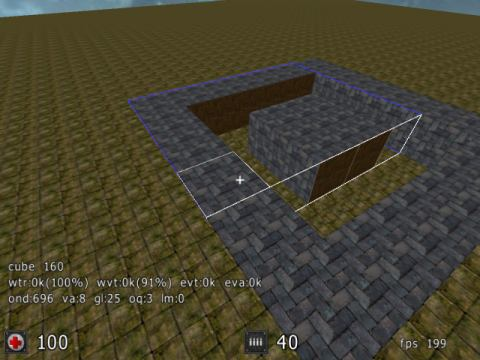

Walk Through 101
You should definitely be aware of the
conventions used here.
Depending on your depth of involvement with this project you might want to skip ahead ...
First Edit Run
run sauerbraten
open console (either press 'BACKQUOTE' or first 'T' and then '/')
gamma 150
then
edittoggle (or press 'E')
now enter
newmap
FYI : the resulting "map" is a half-filled octree.
From here on you will start to build your own map layout.
Turn your camera view downwards
scale up grid by 2 :
G+MW
delete a cube downwards by simply scrolling away from you
and delete another one next to that
fly into the hole and
edittoggle (or 'E')
run around - get a feel for the size
edittoggle (or 'E')
fly out of the hole
lengthen the corridor by 2 cubes,
Your corridor should have dimensions of 1x4x1,
with orientation depending on your position and selection of first cube, etc.
turn it into a square of corridors
a top-down view of your square,
with x as deleted cubes
xxxx
x x
x x
xxxx
select this top-down square of cubes into a 6x6 selection of the top
adapt the texture :
Y+MW - brick
select from outermost back face of corridor ...
...to off-center side of square : 1x5x4
Y+MW - brick
and repeat for all 4 wall orientations.

fly into square
scale down grid by 2 :
G+MW
HxWxD:3x2x5 cubes from center of any inner wall
turn corner (left or right)
repeat 3x2x5 inwards
savemap wt101
map wt101
orientation will be same as when changing the map,
but spawn will replace you at the coordinates (0,0,0)
where exactly this is in relation to the square of corridors
...let's call it : an atrium
depends very much on your personal execution of this walk-through!
You can select a specific starting point by placing your first entity.
What every map should have at least on of.
A
playerstart
newent playerstart
(or use editing menu)
orientation taken from your LOS as the editing camera position at creation time
[LOS:line-of-sight]
entproperty N D
with N the property index (0..3) and D the delta (..-2,-1,0,+1,+2..)
savecurrentmap
map wt101
map wt101
map wt101